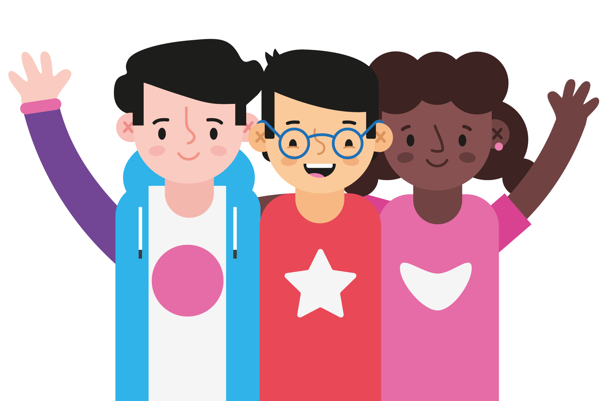

Joining our Club
What is a Ninja?
Ninjas are the young people that attend the dojo. If you're aged
between 7 and 17, then that's you!
Why are they called Ninjas?
A 'dojo' is somewhere that martial artists train, but really it's
any place for any kind of immersive learning - somewhere to train a
skill with others, and support each other and get better as a team.
Ninjas need to focus, work hard, and never give up if things get
tough. This is how you become a master.
Can anyone be a Ninja?
Yes! Anyone aged between 7 and 17 can join our Dojo
Signing Up
Parents can complete the signup for our Dojo on the CoderDojo
Foundation platform
Our Dojo on the CoderDojo Platform
We will get in contact once we receive signup details.
